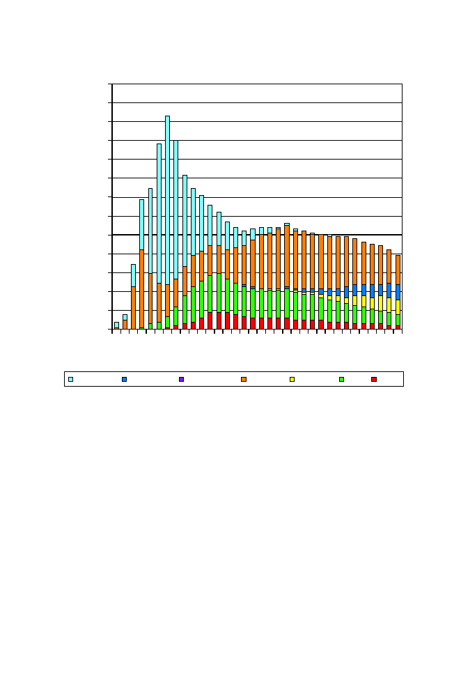

14.3 Sequence Organization within Chromosomes
419
<1
4
7
10
13
16
19
22
25
28
31
34
0.0
0.2
0.4
0.6
0.8
1.0
1.2
1.4
1.6
1.8
2.0
2.2
2.4
2.6
Fraction of human genome
comprised by repeat class (%)
Percentage substitution from consensus sequences
SINE/Alu SINE/MIR SINE/other LINE/L1 LINE/L2 LTR DNA
Fig. 14.5.
[This figure also appears in the color insert.] Abundance and sequence
divergence of different classes of human transposable elements. Light blue: SINE Alu
I; dark blue: SINE Mir; green: LTR transposons; orange, LINE L1; yellow: LINE
L2; red: DNA transposons. Higher percentages of substitution from the consensus
sequence correspond to more ancient copies of elements. The higher proportion of
Alu elements at lesser amounts of substitution indicates more recent transpositional
activity among this class of elements, while the absence of LINE L2 elements at
low levels of substitution indicates that L2 elements were not transposing recently.
Reprinted, with permission, from International Human Genome Sequencing Con-
sortium (2001)
Nature
409:860–921. Copyright 2001 Nature Publishing Group.
the case of
Drosophila
, this amounted to about one-third of the total genome
(Adams et al, 2000).
Genetic mapping studies allow comparisons within and between genomes
at a map resolution determined by marker or gene densities. Map compar-
isons can reveal genome segments that have been duplicated within genomes
or segments whose genetic organization has been conserved between genomes.
Genome sequences increase map resolution by several orders of magnitude,
which allows for much more detailed comparisons within and between genomes.